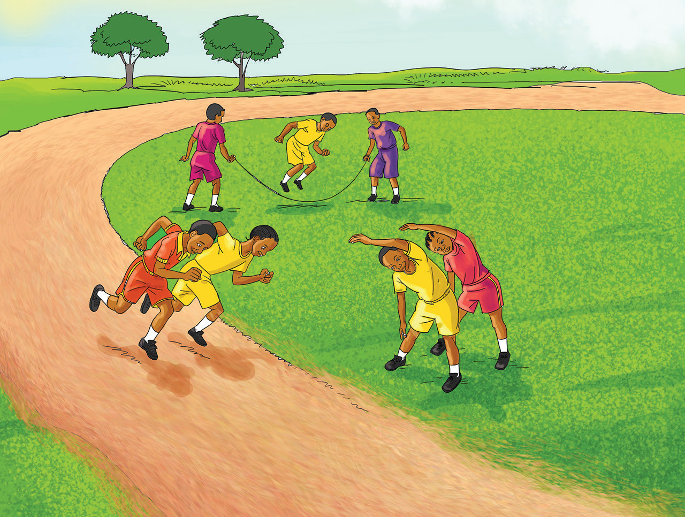

f)
Kufanya mazoezi ya mwili
Mazoezi ya mwili ni muhimu kwa afya. Husaidia kuimarisha kinga ya mwili na kuepuka magonjwa ya aina mbalimbali. Unaposhindwa kufanya mazoezi ya viungo, mwili huwa dhaifu na mlegevu. Hii ni kwa sababu, chembe hai zinazoimarisha kinga ya mwili hazisafirishwi kwa urahisi kufika sehemu zote za mwili. Hivyo, kufanya mazoezi ni muhimu kwa ajili ya kuimarisha kinga na afya ya mwili. Angalia Kielelezo namba 5.
